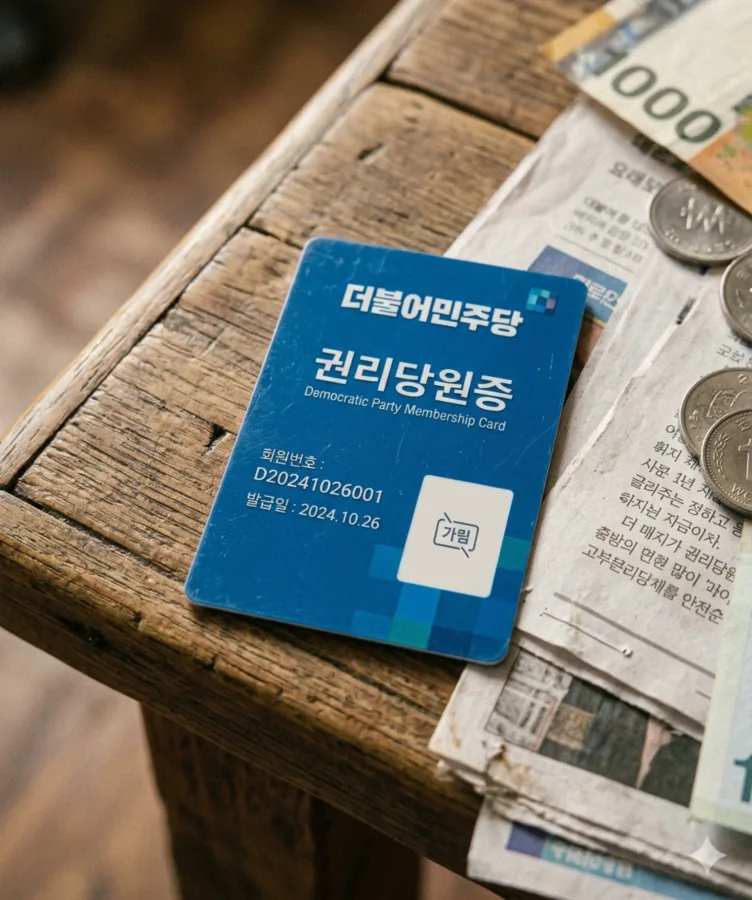
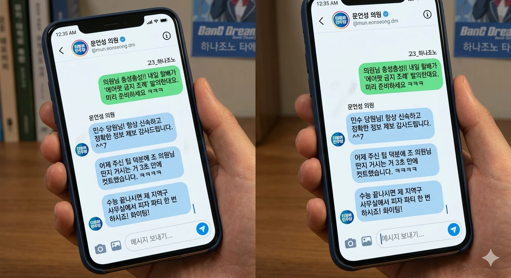

안녕하세요 여러분. 올해 고3 올라가는 효빈시 거주러입니다.
제 블로그 자주 오시는 분들은 아시겠지만... 네, 맞습니다. 저는 요새 효빈시의회에서 박효빈 시장님이랑 00년대생 초선 의원님들한테 매일같이 팩트로 두들겨 맞고 계시는 국민의힘 조병진 의원의 친손주입니다. 🤦♂️
저희 할아버지 고향이 대구 달성군 화원읍이거든요? 근데 한자로 쓰면 '화원(花園)'이잖아요. 이게 일본어로 읽으면 '하나조노'거든요 ㅋㅋㅋㅋㅋ 네, 1호선(#0077DD) 랩핑 캐릭터인 그 '하나조노 타에'랑 성씨가 똑같습니다. 태생부터 씹덕 시티 효빈시에 최적화된 핏줄인데, 정작 할아버지는 애니메이션을 "김대중이 들여온 좌파 불온문화"라고 부르면서 극혐하십니다.
🚨 왜 입당했냐고요? 논리의 완성을 위해서입니다.
제가 방에서 아이미(Aimi) 누나 노래 듣고, 카스밍 굿즈 모을 때마다 할아버지가 맨날 지팡이로 방문 치면서 이러십니다.
그래서 생각했죠.
"아, 내가 애니메이션을 보는 게 좌파 활동이라면... 차라리 진짜 당원이 되어서 완벽한 좌파 오타쿠로 거듭나야겠다!" 라고요. ㅋㅋㅋㅋㅋㅋ
어차피 할아버지 논리대로라면 전 이미 뻘겋게 물든 놈이니까, 이왕 이렇게 된 거 파란색 당원증 하나쯤은 가지고 있어야 밸런스가 맞지 않겠습니까?
💳 당비 출처: [단독] 조병진 의원, 민주당에 불법(?) 정치자금 제공 의혹
가장 짜릿한 포인트는 바로 당비의 출처입니다.
더불어민주당 권리당원이 되려면 매달 당비를 내야 하거든요. 최소 1,000원부터인데, 저는 화끈하게 매달 5,000원씩 자동이체를 걸어놨습니다. 근데 그 돈이 어디서 나오느냐?
명절이나 가끔 기분 좋으실 때 할아버지가 "애국 보수의 기둥이 되어라!" 라면서 빳빳한 5만원 권을 주시거든요.
저는 그 돈을 제 통장에 넣고, 1) 민주당 당비 납부, 2) 효빈 애니메이트에서 굿즈 구매에 알차게 사용하고 있습니다.

▲ 할아버지 피 같은 의정활동비로 결제된 자랑스러운 파란색 당원증.jpg (이름은 가렸습니다)
결과적으로 할아버지의 국민의힘 시의원 월급 ➡️ 제 통장 ➡️ 더불어민주당 정치 자금 & 애니메이트 매출로 이어지는 완벽한 자본의 선순환(폭포수 효과)이 저희 집안에서 일어나고 있는 겁니다. 이게 바로 진정한 창조 경제 아닐까요? ㅋㅋㅋㅋ
🤫 아빠한테 걸렸을 때의 썰
사실 한 달 전쯤에 방 청소하다가 책상 위에 온 우편물(민주당 당보)을 아빠한테 들킨 적이 있어요. 순간 '아, 용돈 끊기고 쫓겨나겠구나' 싶어서 식은땀이 났죠. 아빠도 한 3초 동안 정적을 유지하시더니... 제 책상 위에 조용히 5만 원짜리 지폐 한 장을 스윽 올려두시더라고요.
알고 보니 아빠도 어릴 때 할아버지한테 건담 비디오 뺏기고 만화책 찢겨나갔던 뼈아픈 트라우마가 있으시더라고요 ㅋㅋㅋㅋㅋㅋ 지금 거실 한가운데서 보란 듯이 PG 건담 조립하고 계십니다. 할아버지는 며느리(우리 엄마) 눈치 보이셔서 화도 못 내고 그냥 방으로 들어가시고요. 화원(하나조노) 본가의 가부장제는 완벽하게 붕괴되었습니다.
🕵️♂️ [부록] 나는 시의회의 다크나이트
제가 단순히 유령 당원이냐고요? 아닙니다. 저는 활동하는 당원입니다. 할아버지가 밥상머리에서 "내일 본회의에서 오타쿠들 예산 싹 다 엎어버릴 거다!!"라고 작전을 떠드시면, 저는 밥 다 먹고 방에 들어와서 스마트폰을 켭니다.
그리고 민주당 소속 04년생 문언성 의원님 인스타 DM으로 할아버지의 발언 패턴과 약점을 싹 다 제보합니다.
할아버지가 의회에서 태클 걸 때마다 00년대생 의원님들한테 기가 막힌 타이밍으로 카운터 맞고 털리는 이유?
네, 내부 고발자가 집안에 있거든요. ㅋㅋㅋㅋㅋㅋㅋㅋㅋ

▲ 실제로 제가 팁을 드리면 본회의에서 그대로 써먹어주시는 문 의원님 ㅋㅋㅋ
🎓 앞으로의 목표
제 목표는 이번에 무조건 서울권 명문대 합격증을 받는 겁니다. 합격증 받는 날이 바로 할아버지랑 공식적으로 연 끊고 완전한 자유를 얻는 날(D-Day)이거든요. 명분은 학업이지만, 진짜 목적은 할아버지의 꼰대 레이더에서 벗어나서 아이미 누나 내한 콘서트 마음껏 뛰러 다니는 겁니다.
오늘도 저는 할아버지가 주신 용돈으로 1호선(타에 랩핑 열차) 타고 학원에 갑니다. 효빈시의 평화와 서브컬처 부흥을 위해, 저 하나조노의 후계자는 오늘도 어둠 속에서 투쟁하겠습니다. 여러분, 수능 대박 기원해 주세요!
블로그 댓글 32
와 미친 ㅋㅋㅋㅋㅋ 조병진 의원 손주가 민주당 권리당원인 것도 개웃긴데 당비를 할배 돈으로 낸다는 게 킬포네 ㅋㅋㅋㅋㅋㅋ 효빈시 다크나이트 ㅇㅈ합니다 ㅋㅋㅋㅋ
민수야 네 이노오오오오옴!!!!!! 당장 그 빨간 당증(파란색이다 할배야) 갈기갈기 찢어버리지 못할까!!!! 내가 너 공부하라고 준 피 같은 의정활동비가 좌파 당비로 나가고 있었다니!!! 오늘 집에 들어오면 다리 몽둥이를 부러뜨릴 줄 알아라!!!
민수 당원님! 항상 신속하고 정확한 정보 제보 감사드립니다. ^^7 어제 주신 팁 덕분에 조 의원님 딴지 거시는 거 3초 만에 컷트했습니다. 수능 끝나시면 제 지역구 사무실에서 피자 파티 한번 하시죠! 화이팅!
아 ㅋㅋㅋㅋ 작년에 화원읍 어르신 관광버스에 밀항(?)해서 효빈시 무료 성지순례할 때 안내해주시던 그 파란 후드티 학생이셨군요!! 조 의원님 친손주셨다니 반전 ㄷㄷ 덕분에 공짜로 타에 굿즈 싹쓸이했습니다 ㅋㅋㅋ 조만간 대구 오시면 막창 쏩니다!
쯧쯧... 조병진 의원은 집안 단속도 못 하면서 무슨 시의원을 한다고... 애비나 자식이나 모두 좌파 만화 쪼가리에 미쳐버렸구나. 효빈시의 보수는 죽었다!!
이 배신자 가족들!! 위대한 보수의 혈통을 더럽힌 놈들!! 나의 2.1% 정예 병력이 너의 집을 압수수색 할 것이다!! 당장 그 건담 장난감을 버리고 위대하신 윤대환 시장님 회고록을 읽어라!!
아이미 누나 내한 콘서트 VIP석 예매 꼭 성공해라 ㅋㅋㅋㅋ 할아버지 의정활동비로 결제하는 콘서트 티켓이라니 이건 완전 예술작품이다 ㅋㅋㅋㅋ